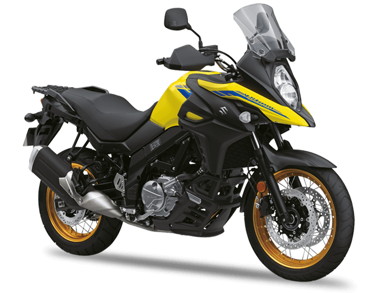

SUZUKI V STROM DL 650

Általános adatok:
- Évjárat: 2022
- Kivitel: Túra
Jármű adatok:
- Szállítható személyek: 2 fő
- Saját tömeg: 216 kg
Motor adatok:
- Üzemanyag: Benzin
- Hengerűrtartalom: 645 ccm
- Teljesítmény: 52 kW, 71 LE
- Munkaütem: 4
- Hengerek száma: 2
- Henger-elrendezés: V
- Keverékképzés: Injector
- Hűtés: Víz
- Hajtás: Lánc
- Sebességváltó: Szekvenciális (6 fokozatú)
Műszaki:
- ABS (blokkolásgátló)
- Fordulatszámmérő
- Immobiliser
- Önindító
- Tárcsafék hátul
- Dupla tárcsafék elöl
- Katalizátor